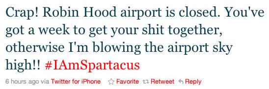
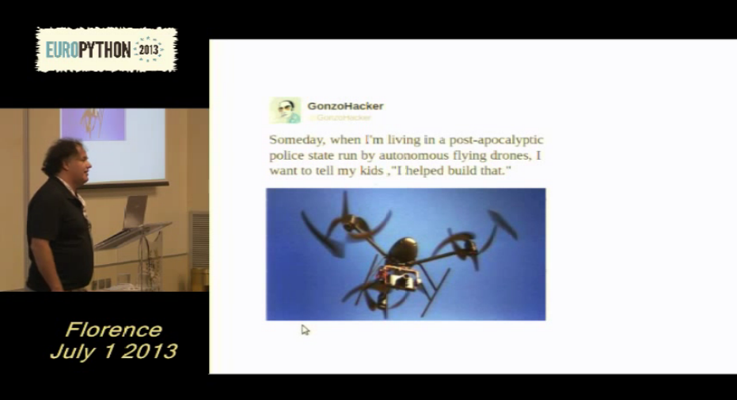

The Return of The Return of Peer to Peer Computing
Nicholas H.Tollervey
/ @ntoll
(with help from
Holger Krekel /
@hpk42)
Aim:
To create a context in which you may think about peer-to-peer computing
Motivations
Questions
Actions
Outcomes
Part #1 - Motivations
Moral Panic
Those who say privacy is dead are the ones that gain the most from surveillance.
William Hague (or any Government minister)
WRONG!
(It's a false dichotemy)
An argument that hides various nasty "home truths".
It's not you who determines if you have anything to hide.

It assumes surveillance results in correct data and sound judgement.
Rules and governments change.
Breaking the law isn't necessarily bad
Privacy is a fundamental human right
"No one shall be subjected to arbitrary interference with his privacy, family, home or correspondence, nor to attacks upon his honour and reputation. Everyone has the right to the protection of the law against such interference or attacks."United Nations Universal Declaration of Human Rights
Privacy tumps all?
No!
Openness of public institutions, governments and corporations
Surveillance is legitimate given probable cause
The right of the people to be secure in their persons, houses, papers, and effects, against unreasonable searches and seizures, shall not be violated, and no Warrants shall issue, but upon probable cause, supported by Oath or affirmation, and particularly describing the place to be searched, and the persons or things to be seized.
Fourth amendment to the constitution of the US of A
Politics
What has that got to do with programming?
We're engineers!
We ask questions like...
- What is the best way to organise computational resources? (Questions about architecture & design.)
- How should such arrangements be created? (TDD, Agile, with Python etc...)
- Who or what is responsible for making things work? (Standards, roles, authorisation.)
Political Philosophers!
Asks questions like...
- What is the best way to organise humanity? (Forms of government: democracy, corporate structures.)
- How should such arrangements be created? (Duty, rights, the law etc...)
- Who or what is responsible for making things work? (Power, authority, governance.)
Programming is politics
we're asking and answering questions about organisation, process, power & control.
Part #2 - Questions
The Return of Peer-to-Peer Computing
What digital world do I want to live in?
What software do I want to create?
What legacy do I leave for my children?
Is Peer-to-Peer and ubiquitous strong cryptography the answer to concerns over power & control in a digital world?
What is Peer-to-Peer (P2P)..?
(I'll assume you know what cryptography is)
Peers of equal status (devices running appropriate software) cooperate in a loose decentralised network for mutual benefit. Peer-to-peer is the antithesis of hierarchy - where some have elevated status and power over others.

Peer-to-Peer (left) vs. Client/Server (right)
(Although sometimes hierarchy is good)
(Especially when it is efficient & saves lives.)
We do not live in an ideal world
:-(
Part #3 - Actions
sprint!
At which we grew a community interested in:
- Redecentralisation of the internet;
- Promoting non-surveilled communication;
- Exploring existing solutions;
- Doing something practical.
sprint!
At which we asked ourselves two questions:
- What are the fundamental elements of a secure P2P system?
- What can we build that is useful?
sprint!
At which we explored several existing technologies:
- Bitcoin;
- P2P Messaging;
- WebRTC
- Distributed Hash Tables / Drogulus;
- Tahoe-LAFS
- Crypto "stuff" (techniques & solutions)
- Many others
sprint!
At which we plugged Holger into the Matrix:
Seriously, these are interesting and fun problems and you don't need to be plugged into anything to take part.
Organise!
At conferences and gatherings like this one.
Prototype!
At conferences and gatherings like this one.
Part #4 - Outcomes
Prototypes & Hacks!
- P2P cryptographic messaging
- Universal DHT (as a platform) - the drogulus
P2P Crypto Messaging
P2P Crypto Messaging
Problem: secure decentralised message delivery to offline peers.
Universal DHT

Universal DHT
My current obsession as the drogulus
- Solves the problem of discoverability and signalling.
- P4P2P - DHT within DHT (or namespaced / scoped DHT).

WHY? You're crazy!
What about economics?
(How is development funded?)
Serendipity?
Values?
Fun?
That itch?
BOF 17:30 in ???
THE END
Image Credits
Edward Snowden The Scream William Hague Mark Zuckerberg Eric Schmidt Emmeline Pankhurst Socrates Gandhi Nelson Mandela HTTP Status Dogs Fail Cthulhu Surgeon Tin Can Phone Distributed Encyclopedia Unicorn Sir Tim B.L. William Gibson Alan Kay Cuniform Tablet
{kind=link}
{kind=link}
{kind=link}
{kind=link}
{kind=link}
{kind=link}
{kind=link}
{kind=link}
{kind=link}
{kind=link}
{kind=link}
{kind=link}
The rest © 2014 the author.